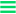
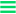

99. Verrassing
- ‘Biertje dan maar?’ – ‘Graag.’ – ‘Vermoeiende dag?’ – ‘Nah. Naar de bilbiotheek geweest. Met de bus.' [...]
 

- ‘Biertje dan maar?’ – ‘Graag.’ – ‘Vermoeiende dag?’ – ‘Nah. Naar de bilbiotheek geweest. Met de bus.' [...]
Vlak voordat ik de bus uitstap bedank ik de buschauffeur via de spiegel voor zijn diensten. Hij zwaait joviaal terug.[...]
Ik stap uit de lul. Mijn aarsrivaal ligt te slapen in zijn kinderwagen. Wat een kutweer. De mensen zijn met [...]
Le premier fevrièr 2011. Presque midi. Le bus s’arrête. Ligne 21. Place de Gare Centrale. Je marche au derrière [...]
Dit kun je allemaal lezen voor dat je vlucht vertrekt